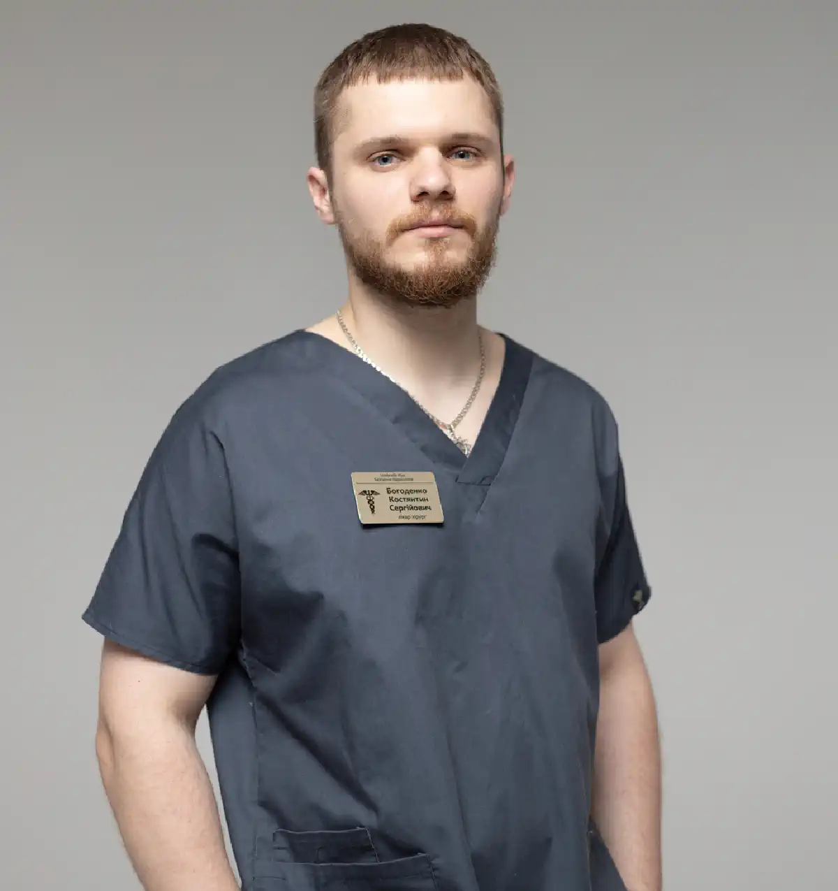

+38(068)
79 72 782
+38(068)
79 72 782Нарколог в Белгород-Днестровском
Профессиональная помощь 24/7


Бесплатная консультация, работаем круглосуточно 24/7
Профессиональная помощь 24/7

Дата написания: Обновляется...
Последнее обновление: Обновляется...
Алкогольная и наркотическая зависимость — это серьёзные хронические состояния, которые требуют своевременного и квалифицированного медицинского вмешательства. В Белгород-Днестровском доступна профессиональная помощь врача-нарколога, направленная на быстрое облегчение состояния пациента, устранение интоксикации и запуск комплексного процесса восстановления организма.
Круглосуточная наркологическая помощь позволяет не только оперативно вывести человека из тяжёлого состояния, но и снизить риски осложнений со стороны сердца, печени и нервной системы. Своевременное обращение к специалисту помогает восстановить физическое и психоэмоциональное состояние, а также вернуть человеку контроль над своей жизнью и сделать первый шаг к устойчивой трезвости.
Обращение к специалисту необходимо уже при первых признаках зависимости или заметном ухудшении состояния на фоне употребления алкоголя или наркотических веществ. Многие люди откладывают визит к врачу, надеясь, что ситуация нормализуется самостоятельно, однако зависимость имеет свойство прогрессировать, а состояние — ухудшаться. Без своевременной помощи для выведение из запоя возрастает риск развития серьёзных осложнений со стороны сердечно-сосудистой системы, печени и нервной системы. Поводом для обращения к наркологу являются:
Дополнительно настораживающими признаками могут быть ухудшение памяти, снижение концентрации внимания, раздражительность, агрессия, апатия, а также конфликты в семье и проблемы на работе. Часто человек начинает употреблять не для удовольствия, а для того, чтобы «нормализовать» своё состояние — это один из ключевых признаков сформированной зависимости. С каждым днём промедления нагрузка на организм увеличивается, а восстановление становится более сложным и длительным. Чем раньше начато лечение, тем выше вероятность избежать тяжёлых последствий, быстрее стабилизировать состояние и вернуть человека к полноценной, здоровой жизни без зависимости.
Зависимость развивается постепенно и на ранних этапах часто остаётся незаметной как для самого человека, так и для его близких. Сначала употребление может казаться контролируемым, однако со временем формируется устойчивая тяга, а организм начинает требовать всё больших доз для достижения прежнего эффекта. Именно на этом этапе особенно важно обратить внимание на тревожные сигналы и не игнорировать проблему. Основные признаки зависимости:
Могут наблюдаться нарушения сна, тревожные состояния, снижение мотивации, ухудшение внешнего вида и общего самочувствия. Со временем зависимость начинает затрагивать все сферы жизни человека, постепенно разрушая здоровье, социальные связи и личность. Зависимость — это заболевание, а не слабость характера или недостаток силы воли. Она требует комплексного и профессионального лечения алкогольной интоксикации и алкоголизма с участием специалистов. Своевременное обращение за помощью значительно повышает шансы на полное восстановление и возвращение к полноценной жизни.
Современная наркология предлагает комплексный и поэтапный подход к лечению алкогольной зависимости, включая детоксикацию, стабилизацию состояния и дальнейшую поддержку организма. Лечение направлено не только на устранение острых симптомов, но и на восстановление здоровья, психоэмоционального состояния и качества жизни пациента. Эффективная терапия всегда включает сочетание медицинской помощи, поддержки внутренних органов и работы с психологическими причинами зависимости.
Часто наркологами могут применяться витаминные комплексы, препараты для нормализации сна, снижения тревожности и восстановления общего тонуса организма. Важную роль играет индивидуальный подход, так как состояние каждого пациента отличается по степени тяжести, длительности употребления и наличию сопутствующих заболеваний. Все процедуры подбираются индивидуально с учётом состояния пациента, длительности зависимости и особенностей организма. Такой подход позволяет сделать лечение максимально безопасным, эффективным и направленным на устойчивый результат без срывов.
Стоимость консультации и помощи нарколога в Белгород-Днестровском начинается от 1500 грн.
| Популярные услуги | Цена |
|---|---|
| Нарколог Одеса | От 1500 грн |
| Капельница от алкоголя | От 2199 грн |
| Вывод из запоя на дому | От 2199 грн |
| Кодирование от алкоголизма | От 6000 грн |
Вывод из запоя на дому — это удобный и эффективный способ получить квалифицированную медицинскую помощь без необходимости госпитализации. Такой формат особенно актуален для пациентов, которые хотят пройти лечение в привычной обстановке, сохранить конфиденциальность и избежать дополнительного стресса. Врач-нарколог приезжает в кратчайшие сроки, проводит осмотр, оценивает общее состояние пациента, измеряет давление, пульс и уровень интоксикации. После этого подбирается индивидуальная терапия и устанавливается капельница, направленная на быстрое восстановление организма. Капельница от алкоголя помогает:
Дополнительно могут применяться препараты для поддержки печени, нервной системы и сердечно-сосудистой системы, что ускоряет процесс восстановления и улучшает общее самочувствие. Процедура проводится под контролем специалиста, что делает её безопасной и максимально эффективной. Уже после первой помощи большинство пациентов чувствуют значительное облегчение, а при необходимости врач даёт рекомендации по дальнейшему лечению и восстановлению.
В экстренных ситуациях важно действовать быстро, так как промедление может привести к серьёзным осложнениям и угрозе для жизни. Срочная наркологическая помощь позволяет оперативно стабилизировать состояние пациента прямо на дому, без необходимости транспортировки в клинику. Это особенно важно при тяжёлых формах интоксикации, когда человеку требуется немедленное медицинское вмешательство. Показания для срочного вызова врача нарколога:
Очень часто тревожными симптомами могут быть сильная тревожность, галлюцинации, скачки давления, судороги или потеря сознания. В таких случаях крайне важно не заниматься самолечением и как можно быстрее обратиться за профессиональной помощью. Круглосуточный выезд нарколога позволяет оказать помощь в любое время суток — днём и ночью. Врач оперативно приедет, проведёт диагностику, начнёт необходимую терапию и обеспечит безопасную стабилизацию состояния пациента.
Детоксикация при запое — это первый и обязательный этап лечения зависимости, без которого невозможно безопасное восстановление организма и переход к дальнейшей терапии. Во время запоя или регулярного употребления в организме накапливаются токсические продукты распада алкоголя и наркотических веществ, которые негативно влияют на работу всех органов и систем. Именно поэтому основная задача детоксикации — быстро и эффективно очистить организм и стабилизировать состояние пациента. Процедура направлена на комплексное восстановление:
Детоксикация чаще всего проводится с помощью капельниц, в состав которых входят инфузионные растворы, витамины (особенно группы B и витамин C), препараты для поддержки печени, седативные средства и медикаменты для стабилизации работы сердца и нервной системы. Такой комплекс позволяет воздействовать сразу на несколько проблем и значительно ускоряет восстановление. Серьезным этапом является снятие абстинентного синдрома — состояния, которое сопровождается тревожностью, бессонницей, раздражительностью и физическим дискомфортом. Правильно подобранная терапия помогает облегчить эти симптомы и предотвратить развитие осложнений, таких как судороги или алкогольный делирий. Процедура проводится под обязательным контролем врача-нарколога. Специалист оценивает состояние пациента, учитывает длительность употребления, наличие хронических заболеваний и подбирает индивидуальную схему лечения. При необходимости терапия корректируется в процессе, что делает её максимально безопасной и эффективной. После проведения детоксикации пациент чувствует заметное облегчение: улучшается самочувствие, нормализуется сон, снижается тревожность. Однако важно понимать, что детоксикация — это только первый шаг. Для достижения устойчивого результата необходимо продолжить лечение, включая медикаментозную поддержку и психологическую помощь.
Кодирование — это один из методов противорецидивной терапии, который помогает сформировать устойчивое отвращение к алкоголю и значительно снизить риск срыва. Он применяется после детоксикации, когда организм уже очищен, а состояние пациента стабилизировано. Основная цель кодирования — создать дополнительный барьер, который помогает удержаться от употребления и закрепить трезвый образ жизни. Основные методы кодирования от алкоголизма:
Медикаментозное кодирование работает на физиологическом уровне: при употреблении алкоголя возникают неприятные симптомы (тошнота, слабость, учащённое сердцебиение), что формирует стойкое отрицательное отношение к спиртному. Психотерапевтические методы направлены на работу с мышлением, мотивацией и внутренними установками пациента. Кодирование не является «волшебным решением» и не устраняет причины зависимости. Оно наиболее эффективно в составе комплексного лечения, которое включает детоксикацию, медикаментозную поддержку и психологическую помощь.
Для многих пациентов вопрос конфиденциальности является ключевым при обращении за наркологической помощью. Анонимное лечение позволяет получить квалифицированную медицинскую помощь без постановки на учёт и без передачи личной информации третьим лицам. Это особенно важно для людей, которые ценят свою репутацию, профессиональную деятельность и личное пространство. Преимущества анонимного лечения зависимости:
Врач соблюдает строгие принципы медицинской тайны и этики, что гарантирует безопасность личных данных пациента. Вся помощь оказывается максимально аккуратно, без огласки и с учётом психологического состояния человека. Анонимный формат помощи при запое позволяет пациенту чувствовать себя спокойнее и увереннее, что положительно влияет на результат лечения. Отсутствие страха осуждения или огласки помогает быстрее принять решение о начале терапии и сосредоточиться на восстановлении здоровья.
Да, нарколога можно вызвать в любое время суток — служба работает круглосуточно, без выходных и праздников. Это позволяет оперативно реагировать на любые экстренные ситуации и оказывать квалифицированную помощь тогда, когда она действительно необходима. Ночные вызовы особенно актуальны, так как ухудшение состояния часто происходит именно в вечернее или ночное время: усиливаются симптомы интоксикации, тревожность, бессонница, возможны скачки давления и нарушения сердечного ритма. В таких случаях важно не ждать до утра, а сразу обратиться за медицинской помощью.
Круглосуточная работа наркологической службы позволяет быстро направить специалиста по адресу, провести диагностику и начать лечение на месте. Врач стабилизирует состояние пациента, подберёт необходимую терапию и при необходимости даст рекомендации по дальнейшему восстановлению. Своевременный вызов нарколога помогает избежать осложнений, облегчить состояние и значительно ускорить процесс восстановления, независимо от времени суток.
Получить помощь можно уже сейчас — доступна бесплатная консультация нарколога по телефону. Это удобный и быстрый способ получить профессиональную оценку состояния без необходимости сразу вызывать врача или ехать в клинику. Во время консультации специалист:
Консультация проходит анонимно и конфиденциально, что особенно важно для многих пациентов и их близких. Вы можете задать любые вопросы, уточнить детали лечения и получить понятные рекомендации без давления и обязательств.
Наркологическая служба UmbrellaPlus — это профессиональная и современная помощь при алкогольной и наркотической зависимости в Белгород-Днестровском и других городах Украины. Мы оказываем квалифицированную медицинскую поддержку на всех этапах лечения запоев и алкоголизма — от экстренной помощи до комплексного восстановления.
В работе используются проверенные протоколы лечения, качественные препараты и комплексный подход, направленный не только на устранение симптомов, но и на восстановление организма и психоэмоционального состояния. Обращаясь в UmbrellaPlus, вы получаете не просто медицинскую услугу, а полноценную поддержку на пути к трезвой и здоровой жизни. Наши специалисты сопровождают пациента, помогают стабилизировать состояние и сделать первый шаг к устойчивому результату.
Позвоните нам: +38(050-021-69-57)

Статья проверена экспертом
Могучев Станислав
Врач терапевт, ординатор
Возможно интересная статья:
Янтарная кислота, Бетаргин и Энтеросгель при алкогольной интоксикации

Да, мы строго соблюдаем полную конфиденциальность на всех этапах лечения. Информация о пациенте, диагнозе и прохождении терапии не передаётся третьим лицам. Обращение к нам не влечёт постановку на учёт. Вы можете быть уверены в безопасности и анонимности.
Программа лечения разрабатывается индивидуально после консультации со специалистом. Учитываются вид зависимости, её длительность, физическое и психологическое состояние пациента. Такой подход позволяет повысить эффективность терапии и снизить риск срыва. Мы не используем шаблонные решения.
Да, мы сопровождаем пациентов и после основного курса лечения. Проводятся консультации, рекомендации по адаптации и профилактике рецидивов. При необходимости возможна дальнейшая психологическая поддержка. Это помогает сохранить результат и вернуться к полноценной жизни.
Анонимно

Ну в хлопців просто золоті руки й світла голова, мене капали Олексій та Владислав, буквально за декілька сеансів я наче заново народився, до цього пив більше 3х тижнів, не міг зупинитись, дуже радий що знайшов саме цих спеціалістів, всім рекомендую
Анонимно
В течение нескольких лет я злоупотреблял алкоголь, что привело к увольнению с работы и вызвало у меня мысли о суициде. Понимая, что такой образ жизни неприемлем, я обратился за помощью в клинику “Амбрела”. Здесь я смог преодолеть свою зависимость от спиртного благодаря заботливым и опытным врачам, а также эффективной системе лечения. Спустя более года я полностью избавился от желания употреблять алкоголь, и теперь моя жизнь вернулась в норму. Я даже не приближаюсь к спиртному! Благодарю врачей клиники “Амбрела” за их помощь и заботу.
Анонимно
Я обращался за помощью в различные клиники, пытаясь избавиться от своей зависимости от алкоголя, но без особых успехов. Никак не мог справиться с желанием прибегнуть к бутылке, пока друг не посоветовал мне обратиться в центр “Амбрелла”. Я записался на прием и был поражен заботливым отношением к пациентам. Уже прошло два года, и теперь я смотрю на алкоголь с абсолютной равнодушием, активно занимаюсь спортом и улучшил отношения в семье. Благодаря центру “Амбрелла” моя жизнь была спасена от алкогольной зависимости!
Анонимно
Хочу выразить свою благодарность врачам из центра алкоголизма “Амбрела” за то, что они буквально спасли мою жизнь. В течение последнего года я сильно увлекался питьем, и все это привело к катастрофическим последствиям. Хотя я ходил на терапевтические сеансы, но безрезультатно. Тогда я нашел адрес клиники “Амбрела” в интернете, изучил отзывы и информацию о центре, и записался на прием. Там мне сразу предложили методику лечения, которая помогла не только справиться с физической ломкой, но и психической зависимостью от алкоголя. Не буду распространяться, скажу только одно - после пребывания в этой клинике я стал другим человеком, и навсегда забыл, что такое привкус алкоголя. Больше меня не тянет на это! Я искренне верю, что в центре “Амбрела” трудятся настоящие целители душ!
Анонимно
После сложного развода мой сын начал подавлять свою обиду и горе употреблением алкоголя. Он старался скрывать это от меня, но я, как мать, почувствовала, что что-то не так. В конечном итоге, ситуация стала критической. Моя знакомая посоветовала мне обратиться в клинику “Амбрела”. Я была приятно удивлена их работой! Они помогли сыну преодолеть очередной период злоупотребления алкоголем, и с тех пор прошел уже более года, и он совсем не пьет.
Анонимно
Благодаря вашей помощи, моя семья была спасена. Я с трудом уговорила мужа начать лечение, и последний каплей был пьяное ДТП. К счастью, в аварии никто не пострадал, но это был для него сигнал к действию. Он наконец согласился пройти курс лечения на дому, в стационар не хотел ложиться. Лечение было трудным, и были моменты, когда срыв был настолько близок, но благодаря вашему центру Амбрелла мы справились с этим.
Анонимно
Для меня эта клиника стала настоящим спасением! Долгое время я упорно отказывался от лечения, уверен был, что со мной все в порядке. Но к счастью, семья уговорила меня попробовать. И сегодня я чувствую себя невероятно счастливым, осознавая, что мне абсолютно не нужен алкоголь. Огромное спасибо за помощь и поддержку, которые я получил здесь! Я благодарен вам за новую возможность жить полноценной и счастливой жизнью!
Анонимно
Выражаю благодарность ребятам, которые оказали мне помощь и не отвернулись. Уже 10 месяцев я остаюсь чистой. Благодарю за то, что помогли найти новый путь в моей жизни.
Номер телефона:
+380 (68) 797 27 82
+380 (50) 021 69 57
Адрес наркологического центра вашего города уточняйте по
телефону
Работаем в: Киеве, Одессе, Львове, Харькове, Днепре,
Запорожье, Черкассах, Чугуеве, Черноморске, Каменском
Telegram: t.me/umbrellaplus
График работы: Круглосуточно